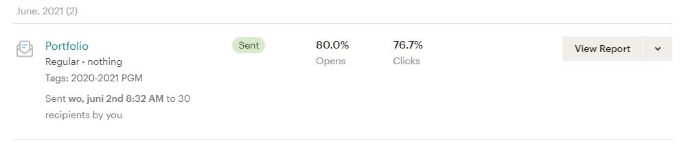

Portfolio Mailchimp Campaign
The first time i tried to make an email, I filled in the page and did not know you had to make a survey before adding it to the email. So after I finished making the email I went back to my mailchimp campaign and made a survey.
After sending the finished email, some people found my mail in their spam folder, for others it just went to their inbox.
Wednesday June 2nd, I sent my mailchimp campaign to 30 e-mail addresses.
Sunday June 6th, I saw that 24 people opened my mail and 19 of those have filled in the survey.
In the survey there were 3 questions.
- What would you rate the landing page?
- Is the website easy to use?
- Do you have any tips or overall feedback?
What would you rate the landing page?
We recieved a lot of different responses on this question. We are happy to see that most of the reponses are very positive.
Is the website easy to use?
I'm happy to say that nobody has answered 'Not at all'. But the other 2 answers are pretty even with 'Just about' taking the lead by one vote. We will continue to improve the user experience while we are developing this website.
Do you have any tips or overall feedback?
We are very happy to see a lot of usefull tips and feedback from the people. We will definitely read this carefully and make adjustments where needed.
- "Link was a bit hidden in the email, not really sure where to click to access the website. For mobile-view I would maybe add a subtle small gray-ish line beneath each project to seperate them more visually. Also when you click on anything of the detail it could collapse, so maybe add a '^'-sort of button to open and close them?"
- "Really nice! Pictures of teh website in the detail of your projects might be a good addition."
- "misschien een linkje naar het project als je er op klikt."
- "I'm guessing not all aspects of the website are finished?"
- "The controls of the donut on the landings page is a bit weird to use. I would assume going up or down with my mouse would do the same. But it goes left instead. The site itself looks very clean and minimalistic and doesn't need to be changed."
- "No"
- "Nice and clean design. Especially the projects overview!"
- "Try to make the information desplayed accessible to users with screen readers or who prefer reduced motion."
- "none at the moment"
- "Design (contact) Let's the finihsed projects (with a link)"
- "No, looks very nice!"
Conclusion
I found that mailchimp is very usefull to reach a lot of people with a professional-looking email. It is really easy to see many people opened your mail and how many people filled in the survey. This tells you if people were actually interessed in your email.
Setting up a professional-looking email is very easy. Drag and drop components and easily edit the size, color is a very fast way to make a interesting email.
The responses to the survey showed me that I need to improve the usability of my portfolio. Some tips I got is to make it more accessible to screenreader users and add icons to show that the project titles are clickable. Another tip was adding images to the projects. Somebody also suggested I added the link to the github repository for the projects. This feature has already been added.